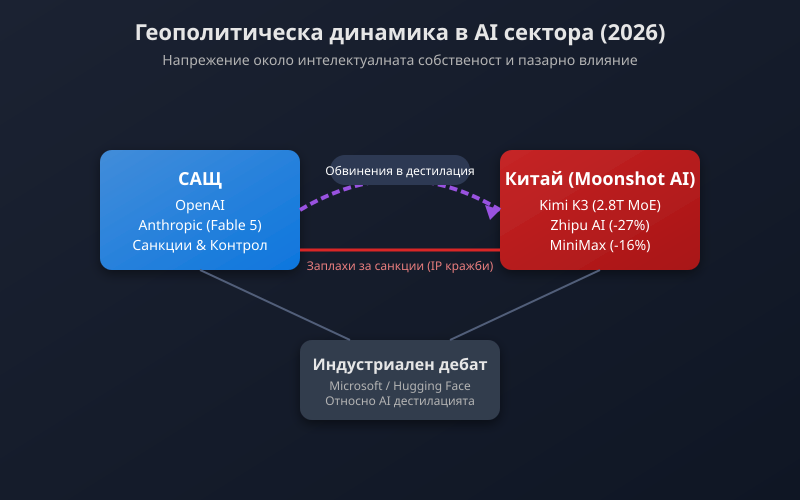

Пазарен трус и геополитика: Как Kimi K3 пренареди AI сцената и предизвика гнева на САЩ
Обявяването на новия флагмански модел Kimi K3 от китайския стартъп Moonshot AI предизвика истинско земетресение на глобалния пазар за изкуствен интелект. Система с впечатляващите 2.8 трилиона параметъра, базирана на архитектурата Mixture of Experts (MoE), демонстрира технологичен скок, който заплашва досегашното доминиращо положение на американските гиганти OpenAI и Anthropic.
Подкрепената от китайските технологични гиганти Alibaba и Tencent компания обяви, че K3 ще бъде пуснат с напълно отворени тегла (open-weight) на 27 юли 2026 г. [1]. Тази новина вече нанесе тежък удар върху локалната конкуренция в региона — акциите на Zhipu се сринаха с 27%, а тези на MiniMax загубиха 16% от стойността си на фондовата борса в Хонконг само в рамките на няколко часа след анонса [1].

Илюстрация на геополитическото напрежение и пазарното влияние в AI сектора. Автор: Svetni.me
Независими бенчмаркове и техническо превъзходство
Първоначалните оценки на независими платформи за тестване като Artificial Analysis и Arena.ai показват, че Kimi K3 постига резултати, равни или дори превъзхождащи най-добрите затворени проприетарни системи от Силициевата долина. В слепи потребителски тестове за уеб интерфейсно инженерство и генериране на комплексен софтуерен код, китайският модел е заел първо място, изпреварвайки системата Fable на Anthropic [1].
Основното предимство на K3 се крие в способността му да изпълнява продължителни автономни задачи с минимална нужда от човешка интервенция. Пускането на модел от този мащаб с отворен код ще позволи на разработчици по целия свят свободно да го изтеглят, модифицират и внедряват локално, прескачайки скъпоструващите проприетарни API услуги на американските компании [1].
От хардуерни ограничения към софтуерни санкции
Въпреки технологичния си успех, премиерата на Kimi K3 веднага попадна под силен политически натиск от страна на Вашингтон. Американският министър на финансите Скот Бесент обяви по Fox Business, че правителството започва мащабно разследване на китайските модели с отворен код за евентуална кражба на интелектуална собственост [2]. Бесент подчерта, че макар САЩ да подкрепят отворената екосистема, администрацията е готова да наложи директни икономически санкции и да включи китайски AI компании в списъка за експортни ограничения (Entity List) при доказани нарушения [2].
Този ход отбелязва фундаментална промяна в стратегията на Белия дом. Докато досега Експортният контрол се фокусираше предимно върху хардуера — каквито са ограниченията за продажба на графични процесори от висок клас на Nvidia — новите мерки са насочени директно срещу самите софтуерни модели и алгоритми [2].
Ситуацията се задълбочава и от изявленията на Майкъл Крациос от Службата за политика в областта на науката и технологиите (OSTP) към Белия дом. Той обвини китайски разработчици в организирано заобикаляне на хардуерните санкции чрез използване на сървърна инфраструктура в трети страни, като посочи Тайланд като ключов хъб за достъп до суперкомпютърни клъстери [2].
Спорът около дестилацията на модели
В центъра на международния скандал стои процесът на Distillation (дестилация) — техника, при която по-нови модели се обучават чрез систематично сканиране и обработка на отговорите, генерирани от водещи американски системи. Американски представители твърдят, че Kimi K3 е постигнал архитектурния си напредък чрез мащабна незаконна дестилация от модела Fable 5 на Anthropic [2].
Тази обвинения разпалиха остър дебат в световната технологична общност:
Главният изпълнителен директор на Microsoft Сатя Надела отправи критика към големите AI лаборатории, отбелязвайки иронията в това, че те разчитат на правото за справедливо използване (fair use) за свободно събиране на данни от глобалния интернет, но същевременно налагат строги ограничения срещу дестилацията на собствените си модели [2].
Главният изпълнителен директор на Hugging Face Клем Деланж заяви в подкаста Equity, че дестилацията е общоприета инженерна практика в целия свят, включително в САЩ. Според него високата производителност на китайските модели се дължи предимно на изключително силните им изследователски екипи и отворения им подход към иновациите [2].
Паралелно с това правният натиск върху сектора расте — скорошното споразумение на Anthropic за 1.5 милиарда долара във връзка с използване на авторски книги за обучение показва, че правният статут на данните за AI остава напълно нерешен на глобално ниво [2].
Перспективи и глобален отзвук
Предстоящото публикуване на отворените тегла на Kimi K3 на 27 юли се очертава като повратна точка за софтуерната индустрия. Външните разработчици получават достъп до модел с трилиони параметри, което може драстично да свали цената на интелигентната автоматизация и да пренареди пазарните дялoве.
За пазарите и регулаторите K3 е доказателство, че въпреки технологичните бариери и експортните ограничения, китайската технологична екосистема развива висока степен на автономия. Дали това ще доведе до пълно разцепване на глобалния AI сектор на американска затворена и китайска отворена инфраструктура, предстои да стане ясно през следващите месеци.
Източници:
[1]: China's Moonshot AI claims Kimi K3 can rival OpenAI and Anthropic - BBC News
[2]: US threatens sanctions against Chinese AI models over IP theft - TechCrunch